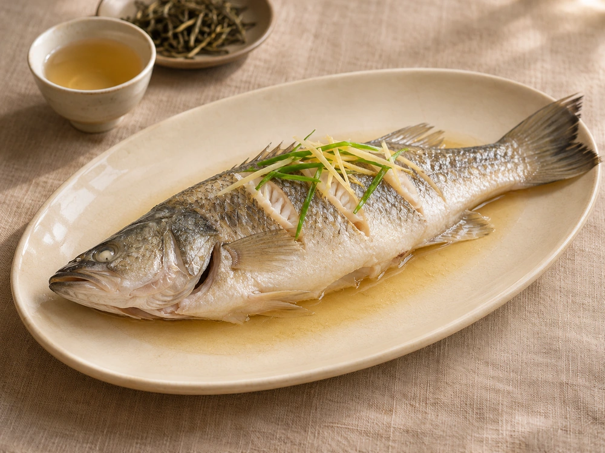

BLOOM TO TABLE
茉莉茶香蒸鱼
以过滤后的茉莉花茶茶汤搭配鲜鱼、姜葱，蒸至熟透。茶香轻轻融入鱼肉，呈现清淡鲜香的家常风味。
花茶入馔 · 清鲜蒸菜 · 日常做法参考
准备食材
- 处理干净的鲈鱼 1 条，约 500—600 克
- 正规成品茉莉花茶约 2—3 克，冲泡后取过滤茶汤约 100 毫升
- 姜丝、葱丝适量
- 食用油、盐及少量蒸鱼豉油（按口味）
制作步骤
- 鱼去鳞、鳃及内脏，清洗后沥干，在两面厚肉处划浅刀。生鱼与熟食分别使用清洁刀具、砧板。
- 按花茶包装说明冲泡并过滤，取约 100 毫升清淡茶汤。盘底垫姜葱，放鱼，撒少量盐，淋入茶汤。
- 蒸锅水开后放入鱼盘，加盖蒸制；500—600 克的鱼可从约 12—15 分钟开始检查，按鱼身厚度延长，至最厚处鱼肉完全熟透、不透明且容易分离。
- 倒去部分蒸汁，放上新鲜姜葱丝，按口味加入少量蒸鱼豉油与热油，趁热食用。不在成菜上添加来源不明的鲜花。
参考茉莉花茶“香片蒸鱼”的入菜方式整理为家庭做法，并非犍为独有传统菜。使用正规成品花茶，不以观赏花代替；鱼类过敏者不食用。 用量可按人数与口味调整。